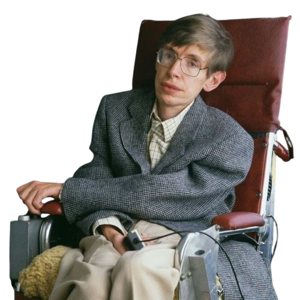

استیون هاوکینگ در سال ۱۹۴۲ در شهر آکسفورد انگلستان، دقیقاً در سیصدمین سالگرد درگذشت گالیله به دنیا آمد.
او در دوران دانشآموزی پسر بسیار باهوشی بود که دوستانش به او لقب «انیشتین» داده بودند، اما سیستم آموزشی
سنتی او را به وجد نمیآورد. او در ۱۷ سالگی وارد دانشگاه آکسفورد شد تا فیزیک بخواند و سپس برای تحصیل در
رشته کیهان شناسی به کمبریج رفت. نقطه عطف و تلخ زندگی هاوکینگ در ۲۱ سالگی رقم خورد؛ زمانی که پزشکان تشخیص
دادند او به بیماری نادر و درمان ناپذیر ALS (فلج محرک های عصبی) مبتلاست و تنها دو سال دیگر زنده خواهد
ماند.این خبر ناامید کننده به جای تسلیم، انگیزهای عجیب در او ایجاد کرد. اگرچه بیماری به مرور تمام بدن او
را فلج کرد، تکلمش را گرفت و او را روی یک صندلی چرخ دار هوشمند نشاند، اما ذهن پروازگر او هرگز زندانی نشد.
هاوکینگ با استفاده از یک کامپیوتر سخنگو که با تکان دادن ماهیچه کوچک گونهاش کار میکرد، به مدت ۳۰ سال
کرسی استاد برجسته ریاضیات کمبریج (همان کرسی نیوتن) را در اختیار داشت. او با نگارش کتاب «تاریخچه زمان»
فیزیک را به خانههای مردم آورد و ثابت کرد که اراده انسان هیچ مرزی ندارد. او پس از بیش از نیم قرن مبارزه
با معلولیت، در سال ۲۰۱۸ درگذشت و نامش به عنوان نماد اراده و ذهن برتر در کیهان شناسی جاودانه شد.

بزرگ ترین دستاورد های استیون هاوکینگ
تئوری تابش سیاه چاله ها ( تابش هاوکینگ )
پیش از هاوکینگ، دانشمندان فکر میکردند هیچ چیز نمیتواند از جاذبه سیاهچاله فرار کند. اما او با ترکیب مکانیک
کوانتوم و نسبیت عام ثابت کرد که سیاهچالهها کاملاً سیاه نیستند، بلکه ذراتی به نام «تابش هاوکینگ» از خود
گسیل میکنند. این کشف نشان داد که سیاهچالهها به مرور زمان انرژی از دست داده، کوچک شده و در نهایت تبخیر
میشوند.
قضایای تکینگی کیهانی ( همکاری با پنروز )
هاوکینگ به همراه ریاضیدان برجسته، راجر پنروز، روی ساختار فضا-زمان کار کرد. آنها با محاسبات ریاضی اثبات
کردند که اگر نظریه نسبیت عام انیشتین درست باشد، جهان ما حتماً باید از یک نقطه با چگالی بینهایت و حجم صفر به
نام «تکینگی» (Singularity) یا همان انفجار بزرگ (بیگ بنگ) آغاز شده باشد.
تئوری کیهان شناسی کوانتومی ( مدل بدون مرز )
او با همکاری جیمز هارتل، فرضیهای را مطرح کرد که طبق آن، جهان در لحظات اولیه پیدایش خود هیچ لبه یا مرز مشخصی
در زمان و مکان نداشته است. این مدل ادعا میکند که بپرسیم «قبل از بیگبنگ چه بوده» درست مثل این است که بپرسیم
«در شمال قطب شمال چیست؟»؛ چرا که زمان در آن لحظه مفهوم متفاوتی داشته است.
عامه فهم کردن علم فزیک و کیهان شناسی
یکی از بزرگترین دستاوردهای غیرآزمایشگاهی هاوکینگ، پل زدن میان علم پیچیده فیزیک و عموم مردم بود. کتابهای او
مانند «تاریخچه زمان» و «طرح بزرگ» با زبانی ساده، بدون فرمولهای ریاضی و بسیار جذاب نوشته شدند و میلیونها
نفر را در سراسر جهان به شناخت رازهای سیاهچالهها، منشأ جهان و نجوم علاقهمند کردند.